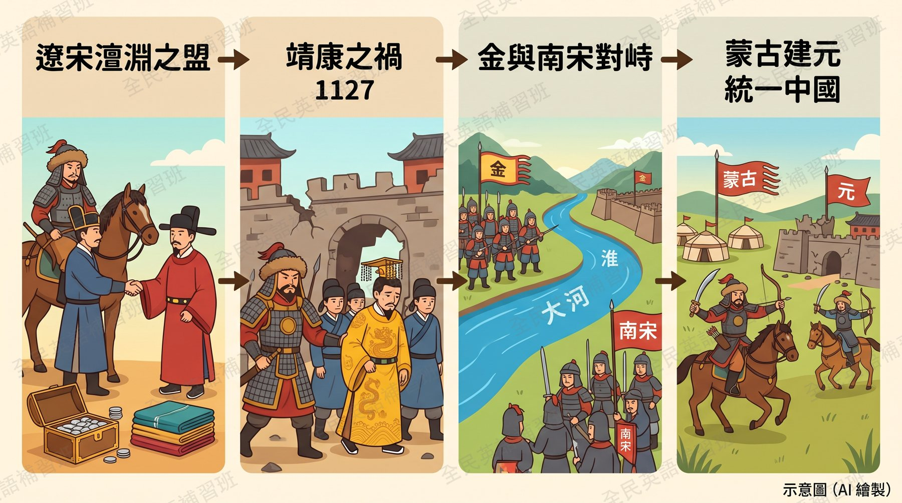
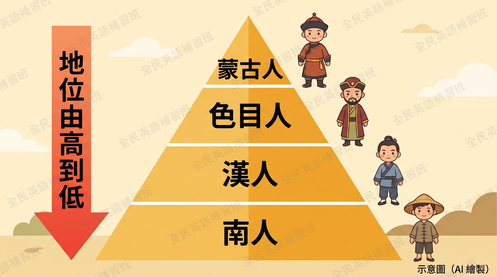
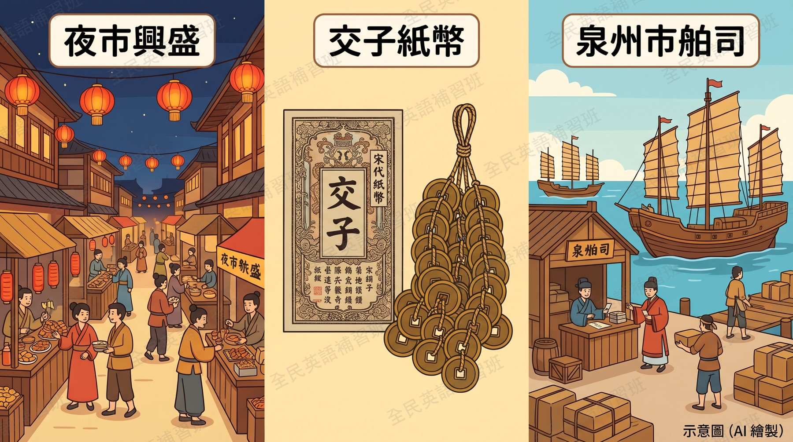
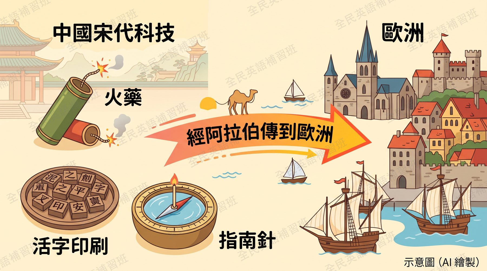

第3課｜宋元時期的民族互動
一、遼、宋、金的互動

⭐ 三版共通唐朝滅亡後，北方草原民族崛起，和漢人建立的宋朝時戰時和。
| 順序 |
事件 |
重點 |
| 1 |
契丹建遼 |
取得燕雲十六州（長城失去防禦作用）；西夏、女真都向遼稱臣，成為北方強權 |
| 2 |
趙匡胤建宋（北宋） |
定都汴京（今開封）；重文輕武 → 軍事較弱 |
| 3 |
澶淵之盟（宋真宗） |
宋每年給遼歲幣（銀、絹）；劃定疆界；雙方君主以兄弟相稱 → 對等外交，和平一百多年 |
| 4 |
女真建金，宋金聯合滅遼 |
金看出宋軍弱 |
| 5 |
靖康之禍（1127） |
金攻陷汴京、俘虜宋朝皇帝，北宋亡 |
| 6 |
南宋定都臨安（今杭州） |
宋金長期南北對峙 |
🎯 段考重點岳飛〈滿江紅〉「靖康恥，猶未雪」→ 指靖康之禍；岳飛是南宋將領，「胡虜」指女真。
📘 南一情境題：宋遼議和，有人說「用錢買和平，資助強敵」，也有人說「不打仗還能和契丹人做生意」→ 同一件事可以有不同觀點。
⚠️ 易混淆澶淵之盟是「宋與遼」；靖康之禍是「金」攻宋。宋的兩次結盟都是「聯一打一」：聯金滅遼、聯蒙古滅金。
二、蒙古帝國與元朝
⭐ 三版共通
- 13世紀初，鐵木真統一蒙古，稱「成吉思汗」（偉大的君主）。
- 三次西征、建立四大汗國，與南宋合作滅金 → 橫跨歐亞的蒙古帝國。
- 孫子忽必烈建立元朝，定都大都（今北京），是元世祖；滅南宋 → 蒙古人成為第一個統治全中國的草原民族。

元朝四等人【段考重點】
| 等級 |
指誰 |
地位 |
| 蒙古人 |
統治者 |
最高，擔任重要官職 |
| 色目人 |
西域各族 |
多負責財政 |
| 漢人 |
原本受金統治的人（含契丹、女真） |
受限制 |
| 南人 |
原本受南宋統治的人 |
最低 |
- 元朝後期財政混亂、賦役繁重、天災 → 民變四起，元朝滅亡。
📘 翰林元代讀書人難以做官，有些人轉而寫戲劇（元曲）。【南一】四等人沒有明寫在法律，卻是決策時的考量。
⚠️ 易混淆「漢人」不等於「漢族」：元朝的「漢人」是指原本住在金國的人；原本住在南宋的叫「南人」。
三、宋元的商貿發展

⭐ 三版共通
- 城市商業：宋代坊市制度廢除（以前商業區「市」和住宅區「坊」分開、有營業時間）→ 隨處開店、夜市興盛。〈清明上河圖〉畫出北宋汴京的繁華。
- 紙幣：銅錢太重 → 北宋「交子」、元朝「寶鈔」。
- 海上貿易：造船進步、用指南針；在廣州、泉州設市舶司（管理商船、收稅，像今天的海關）；泉州是世界大港。
- 陸上貿易：蒙古西征後東西商路暢通，各地設驛站（換馬、休息、傳遞消息）。
📘 翰林北宋從占城引進早熟稻，稻米產量大增 → 人口增加、商業更活絡。也因北方被遼、金擋住，宋代對外貿易以海路為主。
📘 康軒忽必烈重視商業：發行紙幣、整修運河、建驛站、支持海外貿易；馬可波羅對泉州印象深刻。
⚠️ 易混淆市舶司（港口、管海上貿易）vs 驛站（陸路、換馬休息）。
四、學術與科技
⭐ 三版共通
- 理學（新儒學）：宋代學者把佛學等思想融入儒學；南宋朱熹集大成，《四書集注》（論語、孟子、大學、中庸）成為元代以後科舉的標準本；傳到朝鮮、日本。

| 科技 |
宋元的發展 |
怎麼影響世界 |
| 火藥 |
宋代廣泛用在戰爭 |
隨蒙古西征傳到阿拉伯、歐洲 |
| 活字印刷 |
北宋畢昇發明，字可重新組合 |
知識與教育更普及 |
| 指南針 |
宋代用於航海 |
經阿拉伯人傳到歐洲，幫助新航路發現 |
📘 翰林課後閱讀：中國最早發明火藥，但15～16世紀較和平、軍事革新慢；歐洲戰爭多、火器進步快 → 19世紀中期中國才發現差距很大。
五、宗教與文化交流
⭐ 三版共通海陸交通暢通 → 許多穆斯林商人來華，伊斯蘭教廣泛傳播（泉州清淨寺，阿拉伯風格清真寺）；帶來天文曆法、醫藥（《回回藥方》）、數學知識。元朝聘「回回」擔任司天監。
📘 南一「珍珠在蒙古帝國」：蒙古人愛白色大珍珠，靠穆斯林商人與海上貿易取得 → 蒙古把陸地與海洋網絡連起來，形成「世界通商圈」。
第3課易混淆總整理
| 容易搞混 |
正確說法 |
| 澶淵之盟的雙方 |
北宋與遼（兄弟相稱、歲幣） |
| 靖康之禍是誰做的 |
金攻陷汴京，北宋亡 |
| 北宋／南宋首都 |
汴京（開封）／臨安（杭州） |
| 元朝的「漢人」 |
原受金統治者；原受南宋統治者是「南人」 |
| 四書集注成為科舉標準 |
元代起（不是宋代） |
| 市舶司 vs 驛站 |
海港管理機構 vs 陸路休息換馬處 |
第3課關鍵詞彙表
| 詞彙 |
意思 |
| 燕雲十六州 |
長城一帶的戰略要地，被遼取得 |
| 澶淵之盟 |
北宋與遼的和約，歲幣、兄弟相稱 |
| 歲幣 |
宋每年給遼（後來也給金）的銀、絹 |
| 靖康之禍 |
1127年金攻陷汴京、俘宋帝 |
| 成吉思汗 |
鐵木真的尊號，「偉大的君主」 |
| 四等人 |
元朝的族群差別待遇 |
| 坊市制度 |
唐代住宅區與商業區分開的制度，宋代廢除 |
| 市舶司 |
管理海外貿易、收稅的機構 |
| 交子／寶鈔 |
北宋／元代的紙幣 |
| 理學 |
融入佛學的新儒學，朱熹集大成 |